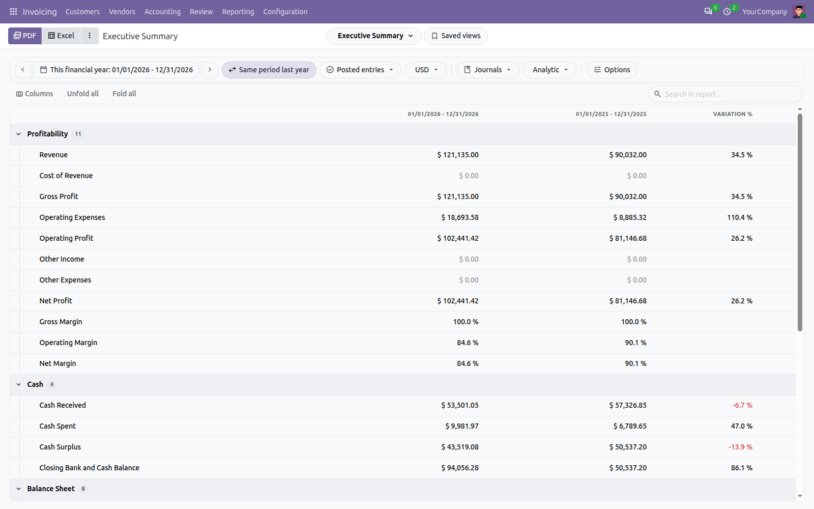
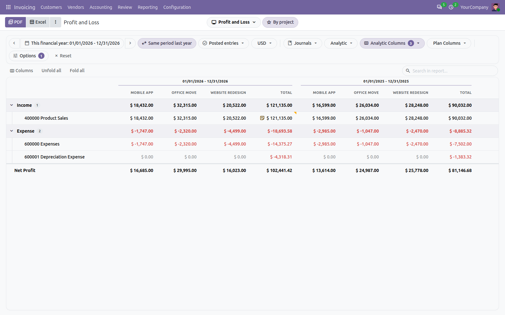
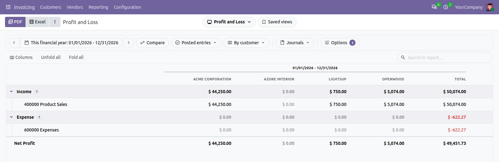
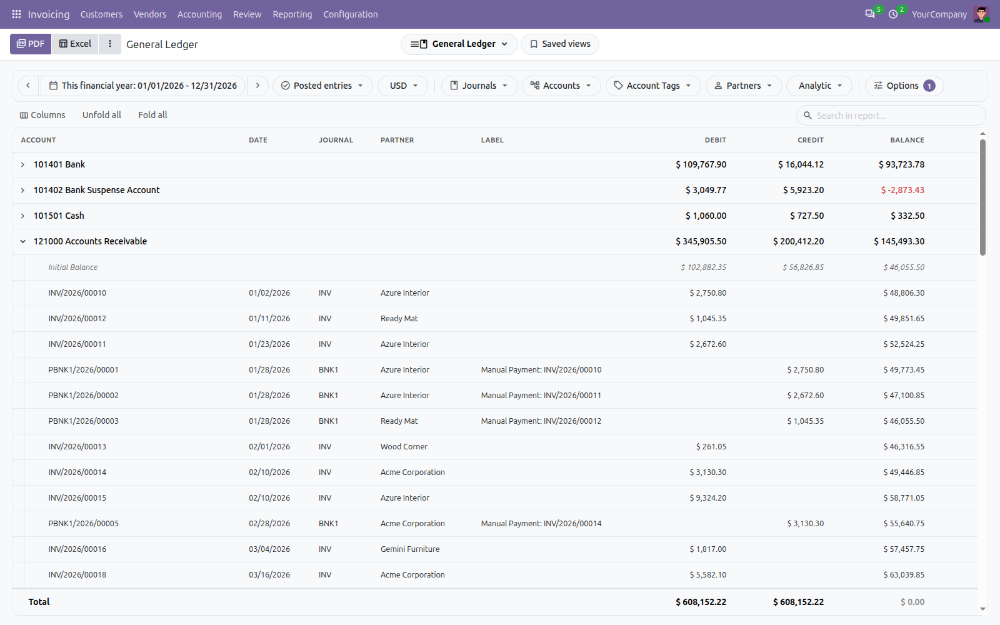
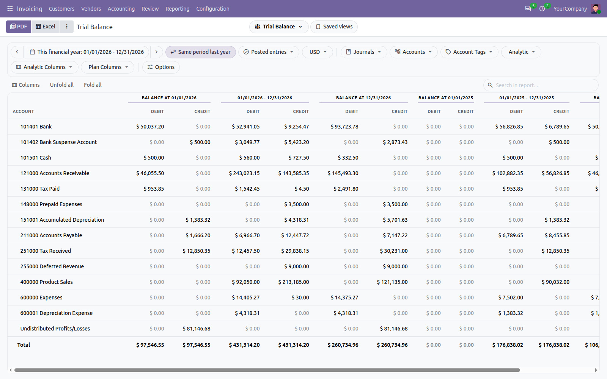
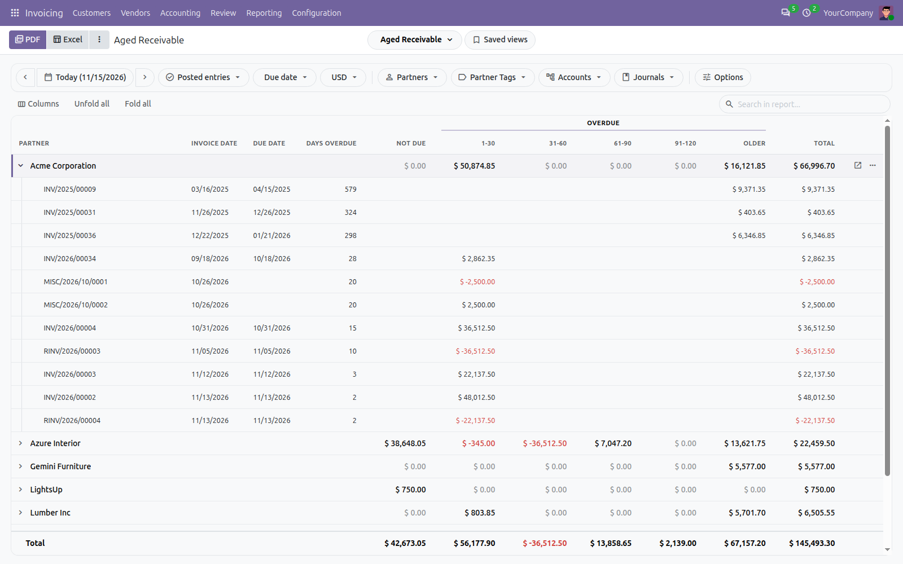
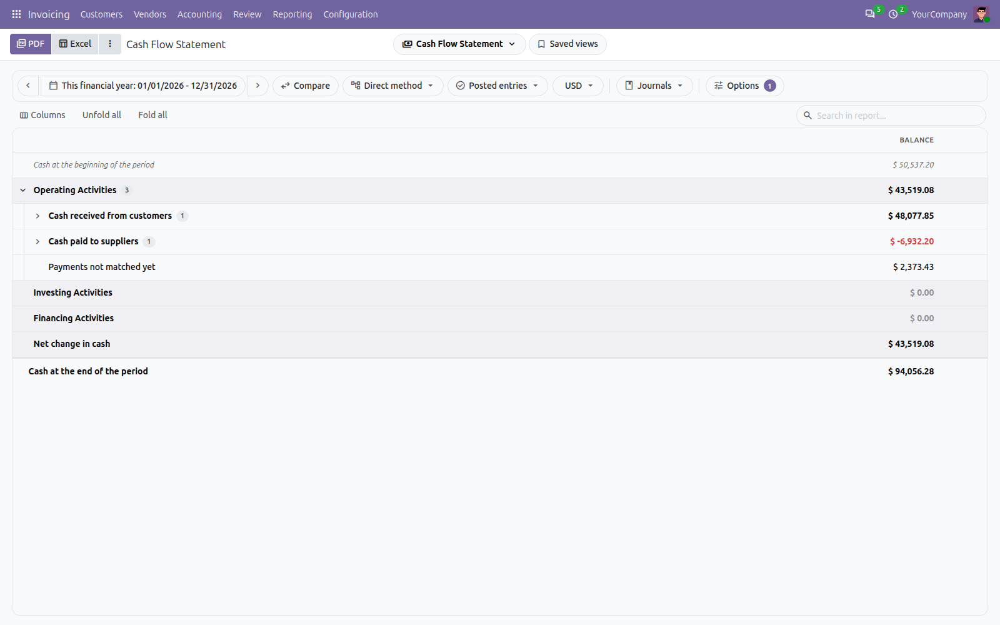
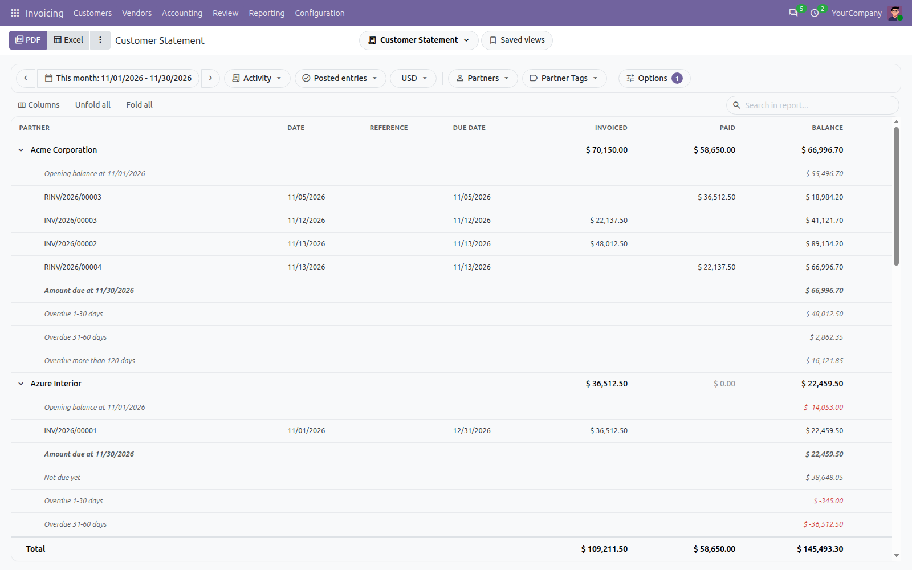
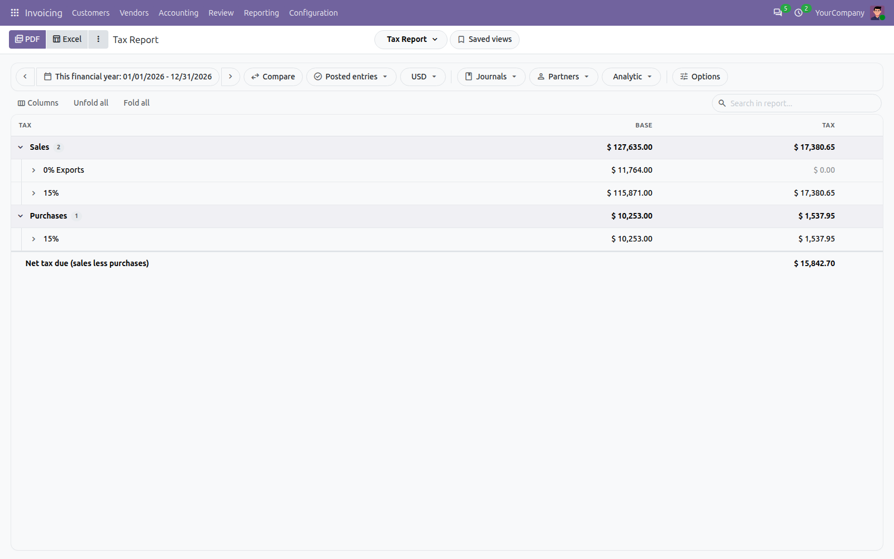
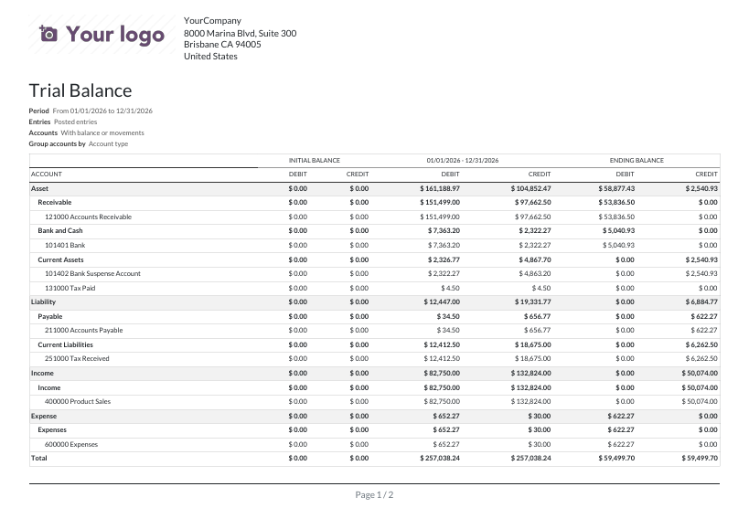

Odoo Mates · free and open source
Dynamic Accounting Reports
Twenty-one accounting reports on screen for Odoo 20 Community: filters at the top, lines that unfold, a click on any figure to see what makes it, and exports exactly as shown.
21 reportsDrill down to the entriesCompare periodsAnalytic columnsSeveral companiesPDF, Excel, CSVCommunity EditionFree, LGPL-3
The figures are those of the PDF reports of Accounting Financial Reports.
Everything at a glance
One way of working in every report.
Filters at the Top
Fiscal-year periods with arrows, posted or draft entries, journals, accounts, partners, analytic accounts.
Unfold and Drill Down
Accounts and partners unfold into their entries; any figure opens the journal items behind it.
Compare Periods
Up to twelve earlier periods side by side, with the variation, or custom dates; amounts in K or M.
Analytic Columns
A column per analytic account or plan, with the share of each entry.
Several Companies
The companies of the switcher together, other currencies converted.
Presentation Currency
Any report in another currency, as IAS 21 asks (closing and average rates).
Notes on Figures
Explain a figure for your team; printed in the PDF and in Excel.
PDF, Excel, CSV
As shown on screen or with every line unfolded.
Saved Views
Filters and columns under a name, private or shared, opened by default.
Account Hierarchy
Group the accounts by type, by parent account or by code.
Send Statements
A partner statement as a PDF with their address, or by email.
Fast to Use
Search in the report, keyboard navigation, your folds remembered.
Twenty-three reports
Under Accounting > Reporting > Dynamic Reports.
Executive Summary
Profitability, cash, balance sheet and ratios on one page.
Balance Sheet
Assets, liabilities and equity at a date, from your own sections.
Profit and Loss
Income and expense of a period, closed by the net profit.
Cash Flow Statement
Direct or indirect method, with the effect of exchange rates.
Tax Report
Base and tax of every tax, and the net tax due.
Tax Return
The tax return of your country, grid by grid; each grid opens its journal items.
EC Sales List
Goods and services sold to the customers of the other countries of the Union.
Trial Balance
Initial, movements and ending, compared over periods.
General Ledger
Every account with its journal items and running balance.
Day Book
Every journal item, day by day.
Bank Book
Receipts and payments of the bank accounts.
Cash Book
Receipts and payments in cash.
Bank Reconciliation
Books against statements, and what is still to match.
Journals Audit
Every journal, entry by entry, with its taxes.
Analytic Report
Income and expense by analytic account, partner or product.
Partner Ledger
What each customer and vendor owes, entry by entry.
Aged Receivable
What customers owe, by how long it is overdue.
Aged Payable
What you owe vendors, by how long it is overdue.
Customer Statement
Activity or open items, as a PDF or by email.
Vendor Statement
What is owed to a vendor, bill by bill.
Deferred Revenue
With Assets Management: revenue recognized month by month.
Deferred Expense
With Assets Management: prepaid expenses month by month.
Depreciation Schedule
With Assets Management: gross value, depreciation, net book value.
Executive Summary
The key figures of the company, compared with last year: profitability, cash, balance sheet and ratios, each amount opening its journal items.

Profit and Loss by project
Analytic accounts as columns, compared with the year before: each column gets the share of every entry its distribution gives it.

Profit and Loss by customer
Horizontal groups split the Balance Sheet, the Profit and Loss and the Trial Balance in columns by journal, partner, product or any other field of the journal items, or by two of them combined. Each column opens its journal items.

General Ledger
Accounts unfold into their initial balance and journal items with the running balance, page by page; the lines you unfold are remembered.

Trial Balance compared
Initial, movements and ending balance of every account, repeated for each period compared, each pair of columns balanced.

Aged Receivable
What each customer owes by how long it is overdue, with the periods of your choice; a customer unfolds into the invoices still open.

Balance Sheet
From the sections of your financial reports, each opening its accounts; in another currency with its translation adjustment.

Cash Flow Statement
By the direct or the indirect method, from the cash at the start to the cash at the end.

Customer Statement
Activity or open items per customer, with what is overdue; download it or send it by email from the line.

Tax Report
Base and tax of every tax, for sales and purchases, and the net tax due.

PDF in your company layout
A4 landscape, with what the report was run with printed above the table.

Your PDF reports stay
The dynamic reports have their own menu: Accounting > Reporting > Dynamic Reports. The PDF reports keep their menus. To hide the menus you do not use, install our free Restrict Menu app (om_restrict_menu) and hide them per user.
Assets and deferrals
Install Assets Management (om_account_asset) and the Depreciation Schedule, Deferred Revenue and Deferred Expense reports come with it (om_dynamic_reports_asset).
Build your own reports
The reports run on the free Dynamic Report Engine (om_report_engine): a new report is a Python model declaring its columns, filters and options, with no JavaScript to write.